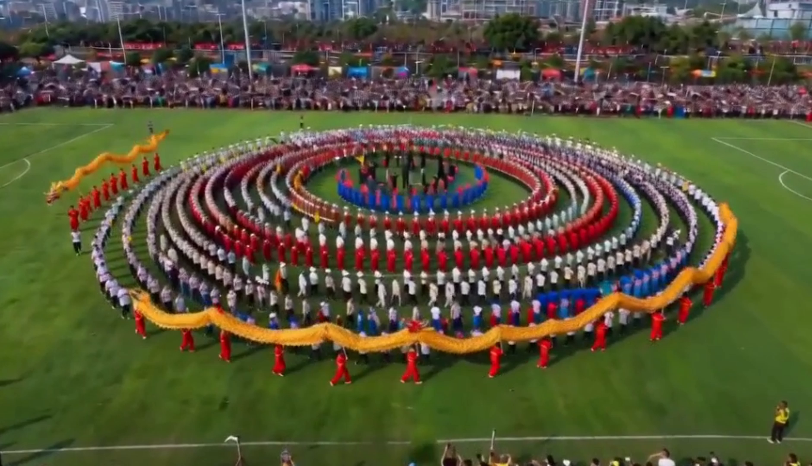

AI 短片 · 独立成片 / 真实投放
2026.05 – 06
01
贵州村超 · AI 短片创作与投放实验
独立完成约 90 秒 AIGC 全流程短片（角色 / 场景 / 分镜 / 动态视频 / 剪辑），真实发布抖音，并用投放数据诊断开头与节奏问题。
我的工作 · AIGC 制作阶段
- 独立完成 AIGC 全流程：侗族少女 IP 形象设计 → 剧本 → 分镜脚本（含每镜场景画面提示词）→ AI 生成角色 / 场景 / 动态视频 → 剪辑包装成片
- 通过提示词工程解决生成不稳定：保证角色一致性、画面衔接与动作表现，完成 88 秒可发布成片
- 真实投放抖音作为传播实验样本，回收信息流点击与前 3 秒完播数据
我的工作 · 投放与数据诊断阶段
- Python 采集抖音 / 小红书 / 视频号数据，构建「平台流量 × 内容供给 × 受众需求」三表，量化题材供需差
- 三角测量：问卷（n=30）+ 真实流量 + 同类对标，提出「双层漏斗」模型定位流失发生在元开头与前 3 秒
- 针对开头吸引力与叙事节奏，输出标题 / 开场重构方案与 5 条可落地优化建议
关键发现
- 2 秒跳出率 48.60%（优秀线 2.4 倍）、完播率 2.26%：问题不在内容质量，而在前 3 秒开场与元开头
- 问卷 100% 正面反馈 vs 真实流量冷启动失败——好素材也要匹配开头钩子与节奏
- 人文故事 / 美食题材供需差最大，是后续可切入的素材方向；「95 岁侗家奶奶」单条播放 5 亿+ 验证人文叙事价值
产出物
在线预览 · 分析报告 v3
下载 docx
在线预览 · 社媒内容分析
下载 md
在线预览 · 抓三秒调研
下载 docx
在线播放 · AI 短片
下载 MP4
Python 脚本（爬虫 / 处理 / 报告生成）
问卷数据处理AI 推荐权重方案双层漏斗模型标题 / 开场重构方案AI 成片（短视频）
技能
AIGC 全流程AI 生图 / 生视频角色一致性分镜脚本
剪辑成片提示词工程投放数据复盘开头 / 节奏优化
抖音算法分析数据迭代
+60%
美食特产内容供需差（最大错位）
48.6%
实验短片 2 秒跳出率（优秀线 2.4 倍）
202 条
三平台合并去重视频数据
3.5 : 1
内容质量与传播效率错配
七主题供需差值 · 文旅体验全面供不应求
双层漏斗 · 流失发生在两个关卡
村超 · 夜间球场

民俗展演 · 同心圆阵
AI 短片帧 · 侗族少女视角开场